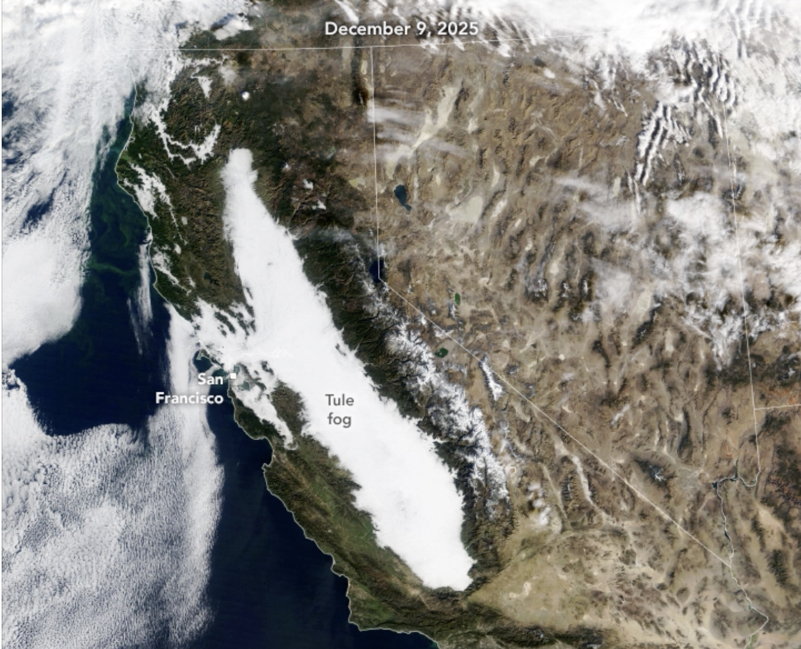

An Unrelenting Tule Fog
An atmospheric phenomenon spanning much of California was unmistakable in satellite imagery in late autumn 2025. Fog stretching nearly 400 miles (640 kilometers) across the state’s Central Valley appeared day after day for more than two weeks in late November and early December. Known as tule (TOO-lee) fog—named after a sedge that grows in the region’s marshes—these low clouds tend to form during colder months when winds are light and soils are moist.
The animation above shows a sprawling blanket of white fog filling much or all of the valley from Redding to Bakersfield between November 24 and December 9, 2025. While the fog mostly remained confined by the Coastal Range and the Sierra Nevada, it occasionally spilled westward through the Carquinez Strait toward San Francisco Bay. The images were acquired with the MODIS (Moderate Resolution Imaging Spectroradiometer) instrument on NASA’s Terra satellite and the VIIRS (Visible Infrared Imaging Radiometer Suite) on the NOAA-20 and Suomi NPP satellites.
The Central Valley is especially prone to the formation of tule fog, a persistent type of radiation fog, during late autumn and winter. It forms when air near the surface—laden with moisture from evaporation—cools until the water vapor condenses. Under calm wind conditions, the droplets accumulate into dense fog near the ground.
Abundant moisture in valley soils following a very wet autumn helped set the stage. Across much of central and southern California, precipitation totals from September through November 2025 ranked among the top 10 percent on record, according to California Institute for Water Resources climate scientist Daniel Swain, writing on his Weather West blog. In late November, a stable high-pressure system developed over the state, acting like a lid that trapped moist air and confined the fog to the valley. With no major storms to disrupt the stratification, the fog persisted.
Temperatures beneath the fog layer were notably cooler in the valley, sharply contrasting with the rest of California, which was mostly warmer than normal. Despite this contrast, the overall air mass was warmer than average, Swain noted. He suggested this may be partly due to warm offshore ocean waters and a low Sierra Nevada snowpack, which reduced the amount of cold air flowing downslope into the valley.
The warmer background conditions may explain why the fog sometimes lingered at a slightly higher altitude, behaving more like stratus clouds than surface-level fog. Colder temperatures would be needed to produce the densest fog near the ground. This higher cloud layer differed from past events, when extremely low visibility caused major traffic incidents.
Central California has experienced prolonged fog events before. In 1985, Fresno endured 16 consecutive days of dense fog, while Sacramento experienced 17, according to news reports. However, researchers have found that tule fog has been forming less frequently in recent decades.
Foggy days can benefit the valley’s fruit and nut trees, which require sufficient chilling between growing seasons to be most productive. Tule fog typically arrives with cold weather that induces dormancy and also shields trees from direct sunlight that could prematurely warm developing buds.